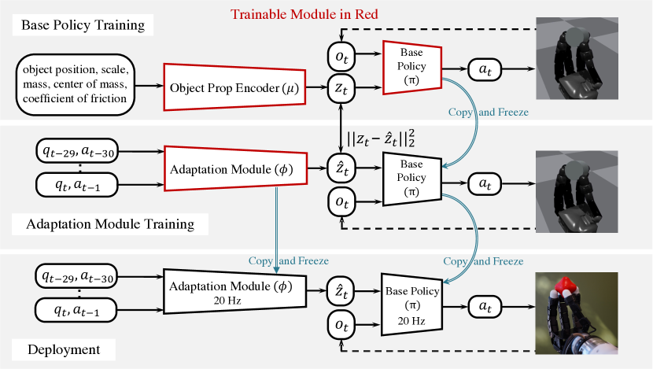
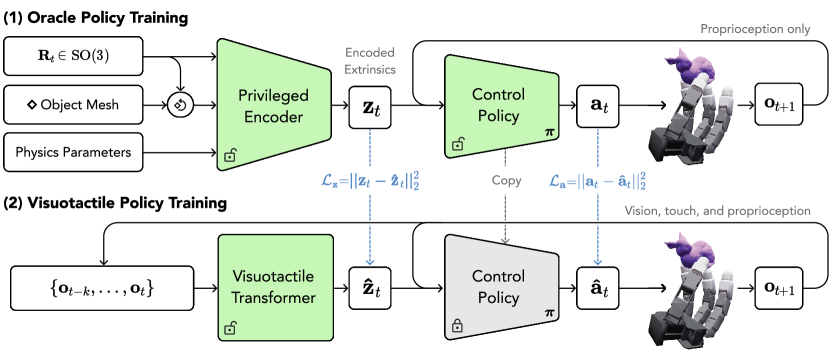
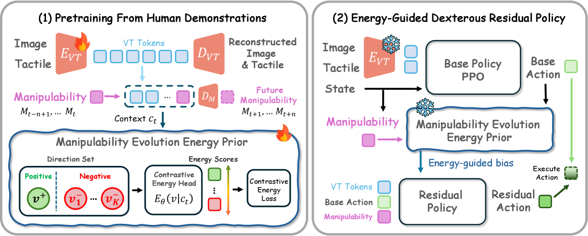
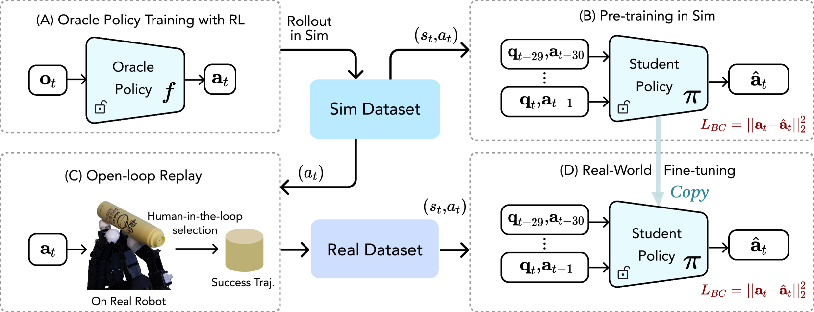
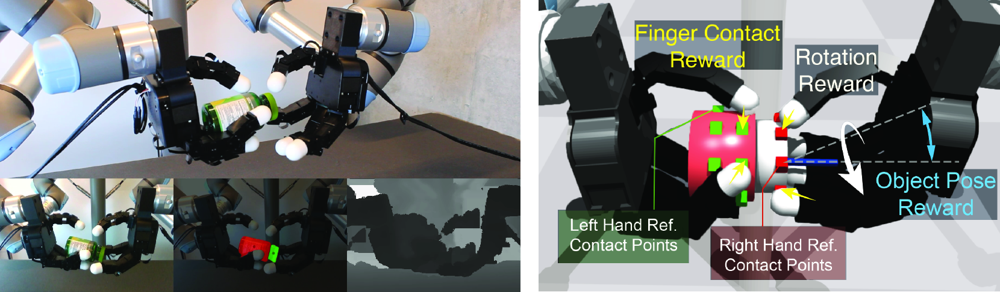
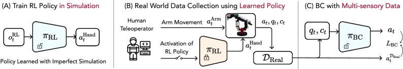

先给结论：螺丝任务不是“换物体版 HORA”
自由手内旋转学习的是可循环的手指换步；真正拧螺丝还要把这个低层运动原语，与工具轴线稳定、接触扭矩、轴向推进和滑移恢复组合起来。
HORA / z 轴连续旋转
只用本体感知历史，先验证 XHand 能否稳定形成松开—跨越—重新接触的周期 finger gait。
DexScrew 三阶段
简化仿真学手指运动先验，技能辅助遥操采集真机多模态数据，再以触觉和历史训练闭环 BC。
先学运动，再补真实接触
复杂螺纹不必在第一天精确模拟；但真机阶段必须补上触觉、腕部运动与恢复数据。
为什么在 DexGen 之后还要单独研究手内旋转
它是检验低层动作先验的标准任务
纯遥操作受延迟、重定向误差和操作者能力限制，很难稳定地产生高频、周期性 finger gait。RL 能在大量并行接触试验中自动发现相位协调。
它是多种实用任务的共同原语
旋转工具柄、拧旋钮、转钥匙、开瓶盖、旋灯泡和调焦，本质都需要“保持力闭合的同时积累相对角位移”。
六篇论文分别解决什么难点
| 任务 | 被旋转对象 | 主要约束 | 策略真正要学会的事 |
|---|---|---|---|
| HORA | 手中近柱状/多样物体 | 抗重力且不掉落 | 循环换指、适应质量/摩擦/尺寸 |
| RotateIt | 多形状日常物体 | 指定手坐标系旋转轴 | 从视觉与触觉推断形状和接触状态，抑制非目标轴旋转 |
| DexMani | 瓶盖、桌面物体、龙头 | 连续接触切换与跨手型迁移 | 让每次接触变化既推进当前旋转，又保留下一步继续旋转的运动能力 |
| PenSpin | 细长笔状物 | 动态惯性、瞬时失去部分接触 | 正确相位的推拨—滚动—再抓取，并保持笔水平 |
| Twisting Lids | 瓶身与瓶盖两刚体 | 双手、静摩擦、相对旋转 | 一手稳定瓶身、一手转盖，同时重定位并避免掉落 |
| DexScrew | 螺母/螺丝刀 | 螺纹、轴向推进、滑移、触觉 | 把手指旋转 gait 与腕部下降/对齐闭环协调起来 |
通用 RL 骨架：为什么 finger gait 会“自己长出来”
并行仿真
随机质量、摩擦、尺度、重心、控制器参数旋转目标
奖励目标轴角速度或角位移稳定正则
物体平移、掉落、能耗、扭矩、姿态偏移周期 gait
部分手指保持，另一手指跨步再接触如果只奖励角速度，策略可能甩飞物体、靠掌心摩擦、用不真实高速动作或绕错误轴旋转。真正决定 gait 质量的往往是奖励组合、动作平滑、初始状态分布和失败提前终止，而不只是 PPO 本身。
观测
关节位置 + 历史动作是最低配；增加物体位姿、深度、触觉或 privileged latent 可处理更复杂形状和接触。
动作
多数工作输出关节目标位置或相对增量，再由高频 PD 控制器转为力矩，便于 Sim-to-Real。
迁移
域随机化适合自由旋转；复杂动态任务常需要 teacher–student、真实轨迹微调或触觉 BC 补齐仿真缺失。
HORA：In-Hand Object Rotation via Rapid Motor Adaptation
arXiv:2210.04887 · CoRL 2022经典之处不只是“能转”，而是证明了不显式写 finger-gait 规则，仅靠旋转目标与稳定正则，就能在仿真中学出可零样本迁移的周期换指动作。

① 上层：学会控制
物体真实属性经 μ 编成 z，与短时状态共同输入 PPO base policy。
② 中层：学会估计
冻结 π，用长历史训练 φ，使 ẑ 逼近 privileged z，而不是重新学习控制。
③ 下层：真机部署
真实物性不再可见；φ 与 π 均以 20 Hz 运行，在线适应对象变化。
Stage A｜训练 privileged base policy
编码器 μ 将物体位置、尺寸、质量、摩擦和质心等 9 维特性压缩成 8 维 extrinsics z。策略 π 接收最近 3 帧关节位置、3 帧历史动作和 z，用 PPO 输出 Allegro Hand 的 16 维关节目标。
Stage B｜学习快速适应模块
适应模块 φ 从本体感知和动作历史估计 ẑ，用 privileged encoder 产生的 z作监督。它不必明确识别物体质量，而是学习对控制有用的隐变量。
Stage C｜真机闭环执行
部署时仅使用关节与动作历史：ẑ=φ(history)，动作 a=π(history,ẑ)。策略 20 Hz，底层 PD 300 Hz，无需视觉或触觉。
奖励与训练设置
主要奖励
- 奖励物体沿手坐标 z 轴的角速度；
- 惩罚手偏离初始姿态；
- 惩罚物体线速度、机械功、关节力矩；
- 物体掉落或进入不可恢复状态时终止。
训练分布
- Isaac Gym 中 16,384 个并行环境；
- 随机柱体直径、长度、质量、摩擦和质心；
- 从稳定 precision grasp 开始；
- 真机展示 30+ 种、约 5–200 g 的不同物体。
RotateIt：General In-Hand Object Rotation with Vision and Touch
arXiv:2309.09979 · CoRL 2023RotateIt 将 HORA 从“只凭历史猜物性、只绕 z 轴”升级为“看见物体形状、感觉指尖接触、沿多轴旋转”。关键仍是 privileged teacher 与可部署感知模型的分工。

① Oracle 提供上限
点云形状、物性和物体状态被压缩为 extrinsics z，帮助 PPO 快速学会多轴旋转。
② 感知替代特权状态
视觉、触觉和本体历史经 Transformer 预测 ẑ，使真实部署不需要对象真值。
③ 两类蒸馏信号
既约束 z 与 ẑ，也约束 oracle 动作与感知策略动作，降低 latent 误差对控制的影响。
Oracle PPO
PointNet 形状 + 质量/摩擦/位姿 → privileged latent zMultimodal rollout
采集前景深度、离散触点、关节与动作历史Visuotactile Transformer
预测 ẑ，再复用 oracle 控制器输出关节目标观测表示
- 视觉：前景物体深度图，3 层 ConvNet 编码；真机用 SAM 分割背景。
- 触觉：指尖接触位置投影到二维并离散为 8 个区域；真机使用四个全向视觉触觉传感器。
- 时序：深度、触点、关节位置和上一动作组成 token 序列，Transformer 推断 extrinsics。
旋转奖励
- 奖励目标轴 k 上的角速度 ω·k；
- 新增非目标轴惩罚 ‖ω×k‖，对 x/y 轴尤其关键；
- 保留手姿、物体平移、能耗和力矩正则；
- 每个轴先单独训练，论文还展示六个主方向的统一策略。
DexMani：Human-Derived Manipulability Guidance for Dexterous Rotation
arXiv:2608.00554 · 2026DexMani 对现有主线补上了一个非常关键的中间层：不把人手关节角硬重定向给机器人，而是从人类旋转示范中学习“接触变化应当怎样演化手的旋转能力”，再用这一跨形态先验指导不同机器人手的 RL 探索。

① 先看左上
图像和触觉被编码成 VT tokens，同时重建输入，得到跨感知的交互表示。
② 再看左下
正/负可操作度变化方向通过对比能量损失训练；低能量代表更符合人类成功旋转趋势。
③ 最后看右侧
Base PPO 给名义动作，冻结先验提供 bias，Residual Policy 决定是否以及怎样修正。
中文重构：把论文原图压缩为四步工程流程
核心表示：接触条件旋转可操作度
mt = vech(log Mω,t) ∈ ℝ⁶
其中接触能力矩阵 C 由当前激活指尖的 Jacobian、触觉置信度和关节尺度构成，抓取矩阵 G 把指尖运动映射到对象旋转空间。统一手腕坐标轴后，人手和不同机器人都能用相同 6 维描述比较“绕 x/y/z 方向还能怎么转”。接触位置相对触觉接触中心计算，不依赖精确物体中心估计。
人类先验怎样学习
- Quest 3 记录全局手姿，Manus 手套记录关节，触觉手套记录指尖压力，同时采集 RGB；
- 将原始 taxel 聚合为五个手指级二值接触 token，降低跨硬件对应难度；
- 视触觉 Transformer 编码 8 帧历史；
- 能量模型给示范中的短时可操作度变化低能量，给随机、反向及错坐标变化高能量，并预测变化幅值。
机器人策略怎样被引导
- Base policy 先提出名义动作 a⁰；
- 在 a⁰ 周围加入高斯扰动形成候选动作；
- 用机器人自身 Jacobian 估计各候选引起的可操作度变化；
- 冻结能量模型选出最低能量方向作为 bias，residual policy 决定最终修正；
- base 与 residual 仍只优化原任务 reward，先验不替代任务目标。
任务、跨手型结果与边界
同一冻结人类先验用于 Shadow、Allegro 和 XHand 的拧盖任务，但每种手仍需在自己的动作空间单独训练策略；在 LEAP 上还评测拧盖、桌面转物体和转龙头，平均成功率 57.5%。龙头任务未出现在人类先验预训练中，因此该结果说明先验传递的是接触—能力演化趋势，而非记住具体物体动作。
PenSpin：Lessons from Learning to Spin “Pens”
arXiv:2407.18902 · CoRL 2024转笔把准静态 finger gait 推入动态区：手指有时必须放开，让惯性继续携带物体，再在正确相位重新接触。论文最大的贡献是务实的 Real-to-Sim 数据桥接，而非假设纯 Sim-to-Real 足够。

① 仿真负责发现动作
带 privileged information 的 oracle 解决人类遥操难以产生动态转笔轨迹的问题。
② 同一轨迹有两个用途
既形成大规模 Sim Dataset 预训练 student，也作为真机开环控制脚本获取 Real Dataset。
③ 真实数据负责校准
复制预训练权重后再以真实成功片段 BC，修正摩擦、惯量和执行延迟差异。
Step 1｜仿真 RL oracle 探索动作
Oracle 观察关节、上一目标、二值接触、指尖位置、笔位姿/角速度和 100 点点云。PPO 输出相对关节目标。奖励包含 z 轴旋转、能耗正则，并新增“最高点与最低点高度差”惩罚以保持笔水平。
Step 2｜用 oracle 轨迹预训练本体感知策略
不是让 student 在线 DAgger 乱跑，而是 rollout oracle，收集高质量状态—动作数据。Student 用 30 步关节和目标位置历史，经 temporal transformer 学习运动先验。
Step 3｜Oracle trajectory replay 到真机
把仿真成功轨迹直接作为真机开环控制器。虽然并非每条都成功，但成功执行提供了人类遥操难以采集的高质量真实示范。
Step 4｜少量真机轨迹微调
用少于 50 条真实轨迹微调预训练 student，补偿惯量、摩擦、结构柔性和执行器延迟误差；最终在训练物体与未见笔状物上连续旋转。
两个容易被忽略的训练条件
初始状态比算法更关键
随机撒点几乎不给有效探索信号。作者人工设计旋转周期中的 6 类 canonical grasp，加噪并筛出稳定状态；只用单一姿态时 finger gait 不稳定。
纯感知蒸馏并不可靠
本体 student 在仿真中难收敛，视觉/触觉又有显著 Sim-to-Real gap。因此采用“仿真预训练 + 成功轨迹真机微调”，接受仿真只提供 motion prior。
Twisting Lids Off with Two Hands
arXiv:2403.02338 · CoRL 2024这篇工作把“物体相对手旋转”改成“瓶盖相对瓶身旋转”。策略必须同时学会抓稳、在手中重定向、分配双手角色并积累相对角位移。

① 视觉只保留关键点
从 RGB mask 与深度估计瓶身、瓶盖中心，用低维状态缩小 Sim-to-Real 差距。
② 左右手接触职责分离
参考接触点要求一只手围绕瓶身稳定，另一只手靠近盖子建立有效旋转接触。
③ 三个目标共同塑形
Rotation 推进角位移，Contact 防止空转和掉落，Pose 保持瓶体轴线适合持续操作。
Brake-link model
用滑动关节压紧盖子，近似难模拟的静摩擦Asymmetric PPO
actor 用可部署观测，critic 使用 privileged stateKeypoint perception
SAM + XMem + 深度，得到瓶身/瓶盖三维中心观测与动作
- 双手关节位置、瓶身与瓶盖的估计三维中心、历史关节目标；
- 相对关节目标经过 EMA 平滑，再交给 PD；
- 真机为两只 16-DoF Allegro Hand，策略与感知 10 Hz。
奖励塑形
- Twisting reward：瓶盖每步相对角位移 Δθ；
- Contact reward：左右指尖靠近各自瓶身/瓶盖参考点；
- Pose reward：瓶体主轴对齐目标方向；
- 工作和动作惩罚，外加失败早停压缩探索空间。
论文真机在 5 个定量对象中可稳定抓住全部对象，并能以合理速度旋转其中 3 个；最佳展示之一在 30 秒内平均完成约 4 圈。开放环回放明显失败，说明视觉关键点闭环和动作精度不可替代。
DexScrew：Learning Dexterous Manipulation Skills from Imperfect Simulations
arXiv:2512.02011 · ICRA 2026这篇与我们的 XHand 目标最接近：作者明确承认仿真没有螺纹和真实触觉，只让仿真负责产生 finger-rotation motion prior，再用真机数据学习最终闭环。

① 仿真只学 motion prior
简化 revolute object 不模拟螺纹，目标是先产生可用的旋转 finger gait。
② 人类只补高层腕部控制
πRL 控制手指，人控制手臂与技能启停，显著降低灵巧示范采集难度。
③ 真机策略联合腕手
最终 πBC 使用真实关节和触觉历史，输出协调的手指与手臂动作。
中文重构：三阶段职责与数据流
Stage 1｜简化仿真 RL
模型与训练
- 固定圆柱底座与螺母/工具柄通过 revolute joint 相连，故意忽略螺纹；
- 8,192 个 Isaac Gym 环境，仿真 200 Hz、控制 20 Hz、最长 40 秒；
- 12-DoF XHand，策略输出相对关节目标；
- oracle privileged latent → 本体历史 latent predictor。
奖励
- 目标轴角速度，裁剪到 [−4, 4] rad/s；
- 拇指/食指靠近对象的 proximity reward；
- 力矩、机械功、偏离初始手型惩罚；
- 过高角速度惩罚与失去接触/停滞早停。
Stage 2｜技能辅助遥操作采集
RL 技能只控制手指，人用 Quest 控制器控制腕部位置、yaw/pitch，并决定何时触发旋转技能。每步记录 12 维手目标、6 维手臂关节目标、手臂/手关节状态，以及五个指尖的原始触觉。每指触觉阵列有 120 个 taxel，每个测三轴力。
Stage 3｜带历史的触觉行为克隆
把过去 K 步关节与触觉串联；触觉先经 MLP，融合特征经 hourglass encoder 输出手臂和手指动作。视觉未使用。时间历史用于判断旋转进度，触觉用于识别接触相位、滑移和轴线偏差，两者联合效果最强。
横向比较：六种方法的控制链路
| 维度 | HORA | RotateIt | DexMani | PenSpin | Twisting Lids | DexScrew |
|---|---|---|---|---|---|---|
| 任务形态 | 单手自由连续旋转 | 单手多轴连续旋转 | 跨任务/跨手型连续旋转 | 单手动态转笔 | 双手相对旋转 | 单手+手臂紧固 |
| RL 算法 | PPO | PPO oracle | PPO base + residual | PPO oracle | Asymmetric PPO | PPO oracle/student |
| 部署观测 | 本体历史 | 本体+深度+触觉 | 本体+RGB+手指级触觉 | 本体历史 | 本体+视觉关键点 | 本体+原始触觉历史 |
| 动作 | 关节位置目标 | 关节位置目标 | 名义动作+残差修正 | 相对位置目标 | EMA 相对位置目标 | 相对位置目标；最终腕手联合 |
| 关键指导 | 目标轴角速度 | 角速度+非目标轴惩罚 | 人类接触条件可操作度演化能量 | 角速度+保持笔水平 | 角位移+接触点+轴对齐 | 角速度+接近+稳定正则 |
| Sim-to-Real | RMA latent + 随机化 | 视触觉 latent distillation | 冻结人类先验+随机化；无真机微调 | 仿真预训练+真实轨迹微调 | 随机化+关键点感知，零样本 | 技能遥操数据+多模态 BC |
| 最大风险 | 只适合稳定初始抓取和 z 轴 | 传感器与分割链路复杂 | 依赖准确 Jacobian/接触与在线候选评分 | 初态和相位极敏感 | 双手硬件、静摩擦建模 | 数据采集慢，腕手时序耦合 |
| XHand 优先级 | A：基线 | B：感知增强 | A+：跨手型动作先验 | B：展示支线 | C：双手远期 | A+：目标主线 |
Finger gait 到底学到了什么
它不是固定关节正弦波，而是一种接触状态机：始终保留足够支撑，再让一个或一组手指脱离、跨越运动学极限并重新建立可产生切向力的接触。
推进
若干手指施加切向力，物体开始转动支撑
拇指或其他手指维持法向力与力闭合换指
达到关节极限的手指卸载、抬起、跨越再接触
新接触建立，角色切换并进入下一周期相位来自历史
单帧关节角难区分“正在滑移”还是“正准备换指”。时间窗口让策略隐式估计 gait phase。
模式受几何影响
粗柄、细笔、三角螺母会诱导不同接触序列；因此训练几何不是无关紧要的外观变化。
触觉负责纠偏
触觉不一定负责生成主运动，而是检测触点、滑移、偏载和失去啮合，触发重抓或腕部微调。
建议落地路线：先证明 gait，再完成螺丝闭环
P0｜XHand 单轴旋转基线
使用圆柱/多边形手柄与稳定初始抓取，12 维相对关节目标、20 Hz 控制、PPO、域随机化。验收不是累计 reward，而是至少 3 个完整 gait 周期、对象不掉落、无关节撞限。
P0｜把接触相位做成可观测指标
记录每指接触二值、法向/切向力、关节速度、对象角速度和 gait phase；自动绘制 contact raster，确认策略在“交替换指”，而不是靠掌心摩擦作弊。
P0｜离线复现 DexMani 可操作度描述
基于 XHand FK、活动指尖 Jacobian、接触掩码和 grasp matrix 计算 6 维 log-Euclidean descriptor；对一条成功旋转轨迹画出可操作度演化，先验证它能区分推进、换指和不可恢复接触。
P1｜工具柄与动作随机化
加入圆柱、六边形、十二边形、软胶套和不同直径/惯量；随机 PD、摩擦、延迟、传感噪声。逐步加入工具轴倾斜惩罚。
P1｜比较三种人类先验注入方式
以相同 PPO 环境比较：无先验、直接 retarget action prior、DexMani-style manipulability prior。重点看样本效率、未见物体成功率和完整 gait 周期，而不只看最终 reward。
P1｜技能辅助真机采集
RL 控手指，操作者仅控制腕部位姿和技能触发。收集成功与恢复片段；明确标注滑移、脱离螺槽、手指撞限和腕轴偏差。
P1｜触觉 + 历史 BC
先用低维触觉特征验证价值：每指总力、力中心、切向/法向比、接触面积。与原始 taxel 网络并行对比，避免一开始把模型复杂度押在触觉图上。
P2｜接入 DexGen shared autonomy
将“旋转 gait”作为低层 skill，由高层遥操或任务策略给出旋转方向、目标速度、腕部轴线和启停；控制器负责稳定、换指与恢复。
推荐的模块接口
g = {rotation_axis, direction, target_speed, enable, recovery_mode}
这样能把通用旋转趋势从具体任务解耦：螺丝、旋钮和瓶盖只需要不同的高层目标、腕部控制和接触终止条件，无需每个 demo 从零学习全部手指协调。
可供同事继续发挥的“更酷 Demo”
优先选择视觉效果强、技术增量明确、失败可控的演示。下面的顺序同时考虑工程成本与传播效果。
旋转调色盘旋钮
手中连续转动带刻度大旋钮，改变灯光颜色或音量；实时叠加目标角度、实际角度和 contact gait。
自主拧螺丝 + 扰动恢复
中途人为反向转动或轻推工具，XHand 检测滑移后重新接触并继续紧固；比单纯成功视频更能体现学习闭环。
发光笔连续转动
笔两端 LED 形成运动轨迹，视觉上直接呈现多圈旋转；从粗短棒 curriculum 到标准笔。
工具柄盲测挑战
随机提供圆柄、六角柄、泡棉柄和偏心柄，策略仅凭本体/触觉自适应换指节奏，展示域随机化价值。
精密相机调焦 / 阀门调节
视觉给目标读数，低层旋转 skill 负责连续小步转动；考察角度精度与轻触控制，不追求极限速度。
开瓶并倒水
双手完成抓瓶、重定向、旋盖、分离、倒水的长时序技能；将 Twisting Lids 与高层技能链结合。
魔方单层连续旋转
一手固定核心，另一手做面层旋转；适合展示参考接触点、相对旋转和精确停止。
钥匙插入后转动解锁
视觉/力控负责插入，高层发出方向，旋转 skill 完成扭转与回中；能验证技能组合而非单一动作。
滴定器 / 移液枪微调
通过连续指尖旋转控制微小刻度，并以触觉检测终点扭矩，强调工业和实验室应用。
评测不能只看“转了几圈”
| 层级 | 建议指标 | 回答的问题 |
|---|---|---|
| 旋转能力 | 目标轴累计角位移、平均/峰值角速度、非目标轴角速度 | 是否真正沿目标方向稳定旋转 |
| 稳定性 | Time-to-Fall、物体平移漂移、工具轴倾角、掉落率 | 有没有用甩动或漂移换取 reward |
| Gait 质量 | 完整换指周期数、接触占空比、无支撑时间、撞限率 | 是否形成可循环而非一次性动作 |
| 接触效率 | 能耗、峰值力矩、法向/切向力、滑移次数 | 动作是否温和、可上真机 |
| 任务进度 | 紧固进度比、完成时间、最终扭矩、脱槽/滑牙次数 | 旋转是否转化为真实任务完成 |
| 泛化 | 未见直径/截面/质量/材质/扰动下成功率 | 策略是技能还是记住单一工装 |
| 人机协同 | 干预次数、操作者负担、恢复成功率、意图跟随误差 | 是否真的优于纯遥操作 |
最少必须做的消融
- 无 observation history vs. 有 history；
- 无触觉 vs. 低维触觉特征 vs. 原始 taxel；
- 无动作先验 vs. retarget action prior vs. manipulability-evolution prior；
- 直接 Sim-to-Real vs. 开环轨迹回放 vs. 真机数据微调/BC；
- 单一训练几何 vs. 多几何与域随机化；
- 仅角速度奖励 vs. 加入轴对齐、接近与平滑正则；
- 纯遥操作 vs. 技能辅助遥操作 vs. 自主闭环。
最终建议
用 HORA 验证 XHand 的旋转原语
重点验证 contact gait 和历史状态建模，不要一开始背上视觉、螺纹和长时序任务的全部复杂度。
复现 DexMani 的跨形态先验
先离线验证 XHand 接触条件可操作度，再将人类演化能量作为 PPO 探索 bias，比较其与直接动作重定向的差异。
采用 DexScrew 的“仿真先验 + 真机闭环”
让 RL 技能降低数据采集门槛，让触觉历史 BC 完成腕手协调与真实接触补偿，再接入 DexGen 的共享自主框架。